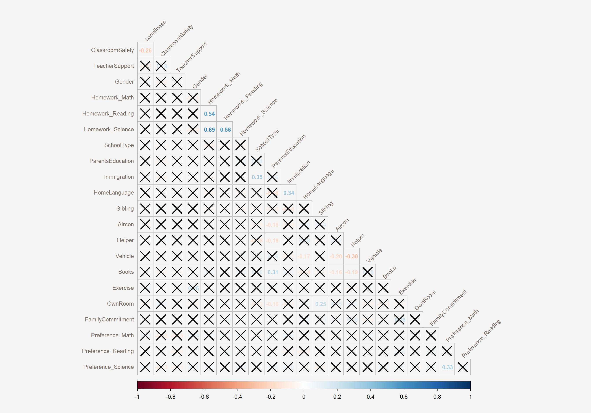
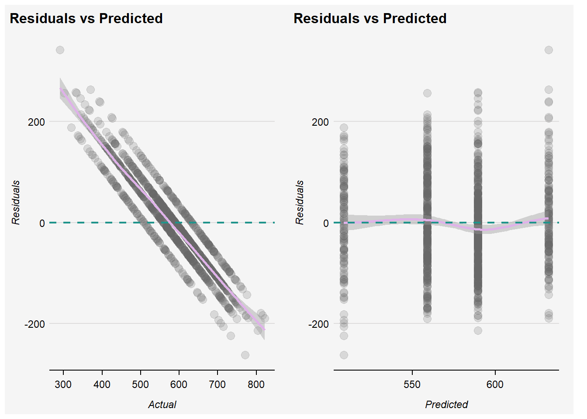

pacman::p_load(tidyverse, ggplot2, patchwork, plotly, gtsummary,
lmtest, broom, vegan, recipes, DALEX, stargazer, corrplot,
modelr, randomForest, rpart, rpart.plot, caret,
performance, ggstatsplot,
MASS)Take-home Exercise 4: Prototyping Modules for Shiny Application
1 Overview
2 Loading Data and Packages
Load in the csv file following minor data cleaning and wrangling documented here.
stu <- read_csv("data/stu_SG_rcd.csv")
stu_encode <- read_csv("data/stu_SG_encode.csv")glimpse(stu_encode)flowchart TD
A[Building Explanatory Model]-->B[1. Feature Engineering - Multicollinearity, Variable Selection]
B-->C[2. Model Building]
C-->C1[2a. Multiple Linear Regression]
C--> C2[2b. Random Forest]
C1-.->F[Model Diagnostic, Assumption Checking]
F-.->E
C2 -->E[3. Variable Importance]
E-->D[4. Model Assessment]
3 Multicollinearity
Regression analysis requires numerical variables. To include categorical variables in a regression model, we will need to perform dummy coding.
In the code chunk below, we use recode() to create dummy variables for SchoolType, Aircon, and Helper variables from our dataset. The remaining variables in our dataset are already in numerical datatype.
Show the code
cols <- c('SchoolType', 'Aircon', 'Helper')
stu_encode <- stu_encode %>%
mutate(SchoolType = recode(SchoolType,
"SGP01" = 1,
"SGP03" = 2),
Aircon = recode(Aircon,
"7020001" = 1,
"7020002" = 2),
Helper = recode(Helper,
"7020001" = 1,
"7020002" = 2))cor() calculates correlation coefficients, the function needs two inputs: the x-coordinates and the y-coordinates. Te argument use = "complete.obs" excludes missing values from the calculation of the correlation coefficient. Altogether, the code chunk below returns the correlation coefficient for each pair of survey participants who had valid responses for each question we have narrowed down to.
stu.cor <- cor(stu_encode[, 1:22], #<< cor(dataset()[,input$variables], checkbox for variable selection
use = "pairwise.complete.obs", #<< input$corUse, allow user to choose "complete.obs", "na.or.complete"
method = "pearson") #<< input$corMethod for selection of other methods like Kendall's Tau or Spearman's Rhoformals() function returns the argument list of the function specified. This can be used in the sidebar to display the options for user selection.
eval(formals(cor)$method)[1] "pearson" "kendall" "spearman"par(bg = "#f5f5f5")
stu.sig = cor.mtest(stu.cor,
conf.level= .95) #<< input$sigLevel for user to choose confidence levels
## CORRPLOT ##
#~~ ui: mainPanel(plotOutput("corrplot")) ~~#
#~~ server: output$corrplot <- renderPlot({...}) ~~#
corrplot(stu.cor,
method = "number", #<< input$corMethod for other alternatives like number, colour, ellipse
type = "lower",
diag = FALSE,
tl.col = "#7C6D62",
tl.srt = 45,
p.mat = stu.sig$p, #<< if(input$sigTest) stu.sig$p else NULL
sig.level = 0.05, #<< ?? Check with Prof Kam if this should be derived?
tl.cex = 0.8,
number.cex = 0.8,
cl.cex = 0.8,
cl.ratio = 0.1,
bg="#f5f5f5") #<< To change according to Shiny page's background
| Function | Feature | UI | Server |
|---|---|---|---|
| stu.cor | Checkbox for variable selection; sortable package allows drag-and-drop to order variables | Within sidebarPanel(): sortableCheckboxGroupInput( |
stu_bm <- eventReactive(input$bm_action, cor(stu_bm, use = |
| Treatment of NA values | Within mainPanel() > tabsetPanel() > tabPanel(“Collinearity”, column(3, []), column(9, plotOutput(“corrPlot”, height = 400))): selectInput( |
input$corUse |
|
| Correlation Method | Within tabsetPanel()(): selectInput( |
input$corMethod |
|
| cor.mtest | To indicate if user wants to show statistical significance; if yes, allow option to set confidence level. | Within tabsetPanel()(): checkboxInput(“sigTest”, “Show Significance Test?”), ~Only show option to select significance level if Significance Test is select~ |
input$confLevel |
| corrplot | Plot display method | Within tabsetPanel(): selectInput(“plotMethod”, “Plot Method”, list(“mixed”, all = eval(formals(corrplot)$method)), “number”) |
input$corMethod |
| Build model button | Build model button once selection is complete. | actionButton(inputId = “bm_action_”, label = “Build Model”) |
4 Model Building
# Set the seed before splitting the data
set.seed(1234)
# Remove missing cases from our dataset
stu_small <- na.omit(stu_encode)
# Split the data into training and test
index <- createDataPartition(stu_small$Math, p = 0.8, list = FALSE) #<< User should be able to pick subject of interest here
train_stu <- stu_small[index, ]
test_stu <- stu_small[-index, ]Multiple Linear Regression
stu_lm <- lm(Math ~ Loneliness + ClassroomSafety + TeacherSupport + Gender + Homework_Math + Homework_Reading + Homework_Science + SchoolType+ ParentsEducation + Immigration + HomeLanguage + Sibling + Aircon + Helper + Vehicle + Books + Exercise + OwnRoom + FamilyCommitment + Preference_Math + Preference_Reading + Preference_Science,
data = stu_small)
summary(stu_lm)
Call:
lm(formula = Math ~ Loneliness + ClassroomSafety + TeacherSupport +
Gender + Homework_Math + Homework_Reading + Homework_Science +
SchoolType + ParentsEducation + Immigration + HomeLanguage +
Sibling + Aircon + Helper + Vehicle + Books + Exercise +
OwnRoom + FamilyCommitment + Preference_Math + Preference_Reading +
Preference_Science, data = stu_small)
Residuals:
Min 1Q Median 3Q Max
-322.58 -49.41 3.09 54.11 260.89
Coefficients:
Estimate Std. Error t value Pr(>|t|)
(Intercept) 509.0117 15.1526 33.592 < 2e-16 ***
Loneliness -3.6995 1.4695 -2.518 0.011848 *
ClassroomSafety -14.9976 1.8398 -8.152 4.47e-16 ***
TeacherSupport -8.3303 1.5042 -5.538 3.21e-08 ***
Gender 20.4592 2.2907 8.931 < 2e-16 ***
Homework_Math 3.8044 1.4109 2.696 0.007031 **
Homework_Reading -14.9990 1.4046 -10.679 < 2e-16 ***
Homework_Science 12.7368 1.4632 8.705 < 2e-16 ***
SchoolType -8.4630 4.7140 -1.795 0.072669 .
ParentsEducation 5.0622 0.6426 7.878 4.04e-15 ***
Immigration 9.2691 1.6819 5.511 3.74e-08 ***
HomeLanguage -17.3413 2.5166 -6.891 6.22e-12 ***
Sibling -10.4245 1.2637 -8.249 < 2e-16 ***
Aircon -23.0220 3.5083 -6.562 5.83e-11 ***
Helper 3.4232 2.7393 1.250 0.211481
Vehicle 6.4617 1.7155 3.767 0.000167 ***
Books 18.2678 0.8626 21.177 < 2e-16 ***
Exercise -6.3527 0.3994 -15.906 < 2e-16 ***
OwnRoom 2.9358 2.3569 1.246 0.212972
FamilyCommitment -3.6592 0.3468 -10.551 < 2e-16 ***
Preference_Math 17.3924 1.2288 14.154 < 2e-16 ***
Preference_Reading -15.9895 1.3348 -11.979 < 2e-16 ***
Preference_Science 13.1695 1.3444 9.796 < 2e-16 ***
---
Signif. codes: 0 '***' 0.001 '**' 0.01 '*' 0.05 '.' 0.1 ' ' 1
Residual standard error: 77.35 on 5135 degrees of freedom
Multiple R-squared: 0.3859, Adjusted R-squared: 0.3832
F-statistic: 146.7 on 22 and 5135 DF, p-value: < 2.2e-16stu_lm_diag <- augment(stu_lm)Random Forest
set.seed(1234)
stu_rf <- randomForest(Math ~ Loneliness + ClassroomSafety + TeacherSupport + Gender + Homework_Math + Homework_Reading + Homework_Science + SchoolType+ ParentsEducation + Immigration + HomeLanguage + Sibling + Aircon + Helper + Vehicle + Books + Exercise + OwnRoom + FamilyCommitment + Preference_Math + Preference_Reading + Preference_Science, #<< User to select variables
data = train_stu,
importance = TRUE,
ntree = 500)print(stu_rf)
Call:
randomForest(formula = Math ~ Loneliness + ClassroomSafety + TeacherSupport + Gender + Homework_Math + Homework_Reading + Homework_Science + SchoolType + ParentsEducation + Immigration + HomeLanguage + Sibling + Aircon + Helper + Vehicle + Books + Exercise + OwnRoom + FamilyCommitment + Preference_Math + Preference_Reading + Preference_Science, data = train_stu, importance = TRUE, ntree = 500)
Type of random forest: regression
Number of trees: 500
No. of variables tried at each split: 7
Mean of squared residuals: 5971.14
% Var explained: 38.855 Model Diagnostics
We will focus on three plots to check if assumptions of multiple linear model are met:
Residuals vs. fitted values plot: This plot serves mainly to check the linearity, although lack of homoscedasticity or independence can also be detected. For linearity, we expect the line (a non-linear fit of the mean of the residuals) to be almost flat. This means that the trend of Y-values is linear with respect to the variables. Heteroskedasticity can be detected also in the form of irregular vertical dispersion around the red line. The dependence between residuals can be detected (harder) in the form of non randomly spread residuals.
QQ-plot: In linear regression, residuals should be normally distributed. This can be checked using so-called Q-Q plots (quantile-quantile plot) to compare the shapes of distributions. This plot shows the quantiles of the studentized residuals versus fitted values. Usually, dots should fall along the reference line. If there is some deviation (mostly at the tails), this indicates that the model doesn’t predict the outcome well for the range that shows larger deviations from the reference line.
Scale-location plot: Serves for checking the homoscedasticity. To meet this assumption, the variance of the residuals across different values of variables is similar and does not notably increase or decrease. Hence, the desired pattern would be that dots spread equally above and below a roughly straight, horizontal line and show no apparent deviation.
## MLR DIAGNOSTIC PLOTS ##
#~~ ui: mainPanel(plotOutput("diagplot")) ~~#
#~~ server: output$diagplot <- renderPlot({...}) ~~#
par(bg = "#f5f5f5")
par(mfrow=c(1,3))
plot(stu_lm, 1, pch = 19, col = rgb(0, 0, 0, 0.15))
plot(stu_lm, 2, pch = 19, col = rgb(0, 0, 0, 0.15))
plot(stu_lm, 3, pch = 19, col = rgb(0, 0, 0, 0.15))
| Function | Feature | UI | Server |
|---|---|---|---|
| plot(stu_lm) | Plots to be updated when response and explanatory variables and | Within mainPanel(): div(plotOutput(“diagplots”, width=600, height=320) |
This has to be wrapped in lm_diagplot <- eventReactive(input$bm_action_, { plot(…) output$diagplots <- renderPlot({lm_diagplot() |
6 Variable Selection / Importance
Multiple Linear Regression
AIC is Akaike's Information Criterion, and estimates the out-of-sample prediction error and relative quality of a statistical model. A higher number indicates more information lost. Lower numbers for AIC = higher quality models.
BIC is the Bayesian Information Criterion, which like AIC, penalizes models for the number of parameters to reduce overfitting. BIC also considers the number of observations in the data, which AIC does not. Lower values of BIC are better, and BIC is generally always higher than AIC, but absolute values do not matter, only relative values when comparing models on the same dataset for the same outcome. If we improve the model (with useful predictor variables), the BIC should go down.
Model selection also involves a search procedure:
- “backward”: start with all possible variables in the model, then consider how deleting a single predictor will affect a chosen metric.
- “forward”: starts with a model using no variables, and adds variables sequentially until it finds a good model or reaches the full model with all the variables.
- “backward/forward” (default) and “forward/backward”: combination of the above. Stepwise search checks going both backwards and forwards at every step. It considers the addition of any variable not currently in the model, as well as the removal of any variable currently in the model.
stepAIC(stu_lm,
direction = "backward",
criterion = "AIC")Start: AIC=44880.36
Math ~ Loneliness + ClassroomSafety + TeacherSupport + Gender +
Homework_Math + Homework_Reading + Homework_Science + SchoolType +
ParentsEducation + Immigration + HomeLanguage + Sibling +
Aircon + Helper + Vehicle + Books + Exercise + OwnRoom +
FamilyCommitment + Preference_Math + Preference_Reading +
Preference_Science
Df Sum of Sq RSS AIC
- OwnRoom 1 9282 30731671 44880
- Helper 1 9343 30731732 44880
<none> 30722388 44880
- SchoolType 1 19283 30741672 44882
- Loneliness 1 37920 30760308 44885
- Homework_Math 1 43500 30765889 44886
- Vehicle 1 84880 30807269 44893
- Immigration 1 181710 30904099 44909
- TeacherSupport 1 183490 30905878 44909
- Aircon 1 257635 30980023 44921
- HomeLanguage 1 284076 31006465 44926
- ParentsEducation 1 371276 31093665 44940
- ClassroomSafety 1 397576 31119964 44945
- Sibling 1 407160 31129549 44946
- Homework_Science 1 453330 31175719 44954
- Gender 1 477252 31199641 44958
- Preference_Science 1 574089 31296478 44974
- FamilyCommitment 1 665983 31388371 44989
- Homework_Reading 1 682258 31404647 44992
- Preference_Reading 1 858465 31580853 45021
- Preference_Math 1 1198548 31920936 45076
- Exercise 1 1513638 32236027 45126
- Books 1 2683245 33405634 45310
Step: AIC=44879.92
Math ~ Loneliness + ClassroomSafety + TeacherSupport + Gender +
Homework_Math + Homework_Reading + Homework_Science + SchoolType +
ParentsEducation + Immigration + HomeLanguage + Sibling +
Aircon + Helper + Vehicle + Books + Exercise + FamilyCommitment +
Preference_Math + Preference_Reading + Preference_Science
Df Sum of Sq RSS AIC
- Helper 1 9265 30740936 44879
<none> 30731671 44880
- SchoolType 1 21103 30752774 44881
- Loneliness 1 38593 30770264 44884
- Homework_Math 1 42615 30774286 44885
- Vehicle 1 82466 30814137 44892
- Immigration 1 179556 30911227 44908
- TeacherSupport 1 183476 30915146 44909
- Aircon 1 251421 30983092 44920
- HomeLanguage 1 283110 31014781 44925
- ParentsEducation 1 364220 31095891 44939
- ClassroomSafety 1 396905 31128576 44944
- Sibling 1 400240 31131911 44945
- Homework_Science 1 455540 31187210 44954
- Gender 1 472484 31204155 44957
- Preference_Science 1 574292 31305963 44973
- FamilyCommitment 1 663688 31395359 44988
- Homework_Reading 1 677629 31409300 44990
- Preference_Reading 1 863910 31595581 45021
- Preference_Math 1 1207662 31939333 45077
- Exercise 1 1531047 32262718 45129
- Books 1 2674782 33406453 45308
Step: AIC=44879.47
Math ~ Loneliness + ClassroomSafety + TeacherSupport + Gender +
Homework_Math + Homework_Reading + Homework_Science + SchoolType +
ParentsEducation + Immigration + HomeLanguage + Sibling +
Aircon + Vehicle + Books + Exercise + FamilyCommitment +
Preference_Math + Preference_Reading + Preference_Science
Df Sum of Sq RSS AIC
<none> 30740936 44879
- SchoolType 1 25344 30766280 44882
- Loneliness 1 37800 30778736 44884
- Homework_Math 1 43263 30784199 44885
- Vehicle 1 74453 30815389 44890
- Immigration 1 178295 30919231 44907
- TeacherSupport 1 184093 30925028 44908
- Aircon 1 248305 30989241 44919
- HomeLanguage 1 275394 31016329 44923
- ParentsEducation 1 358396 31099332 44937
- ClassroomSafety 1 395013 31135949 44943
- Sibling 1 410008 31150944 44946
- Homework_Science 1 454756 31195692 44953
- Gender 1 474582 31215518 44956
- Preference_Science 1 577032 31317968 44973
- FamilyCommitment 1 655392 31396328 44986
- Homework_Reading 1 678243 31419179 44990
- Preference_Reading 1 864239 31605175 45020
- Preference_Math 1 1203343 31944279 45076
- Exercise 1 1561054 32301989 45133
- Books 1 2666995 33407931 45307
Call:
lm(formula = Math ~ Loneliness + ClassroomSafety + TeacherSupport +
Gender + Homework_Math + Homework_Reading + Homework_Science +
SchoolType + ParentsEducation + Immigration + HomeLanguage +
Sibling + Aircon + Vehicle + Books + Exercise + FamilyCommitment +
Preference_Math + Preference_Reading + Preference_Science,
data = stu_small)
Coefficients:
(Intercept) Loneliness ClassroomSafety TeacherSupport
520.917 -3.692 -14.947 -8.344
Gender Homework_Math Homework_Reading Homework_Science
20.381 3.793 -14.946 12.755
SchoolType ParentsEducation Immigration HomeLanguage
-9.600 4.948 9.177 -16.975
Sibling Aircon Vehicle Books
-10.170 -22.513 5.904 18.135
Exercise FamilyCommitment Preference_Math Preference_Reading
-6.420 -3.585 17.411 -16.037
Preference_Science
13.201 Random Forest
importance(stu_rf) %>%
as.data.frame() %>%
mutate(Predictors = row.names(.)) %IncMSE IncNodePurity Predictors
Loneliness 5.260097 1239011.6 Loneliness
ClassroomSafety 13.074213 1156032.9 ClassroomSafety
TeacherSupport 13.005633 1344898.9 TeacherSupport
Gender 15.578473 815874.8 Gender
Homework_Math 18.682030 1512559.6 Homework_Math
Homework_Reading 16.382087 1377442.7 Homework_Reading
Homework_Science 25.507506 1860976.6 Homework_Science
SchoolType 8.426632 228003.4 SchoolType
ParentsEducation 35.525893 3729782.4 ParentsEducation
Immigration 11.126208 854888.5 Immigration
HomeLanguage 9.278671 716390.3 HomeLanguage
Sibling 20.426484 2185691.4 Sibling
Aircon 12.062797 595441.7 Aircon
Helper 4.176590 526694.7 Helper
Vehicle 7.646888 1033191.8 Vehicle
Books 64.494828 5005317.9 Books
Exercise 36.824743 3333302.9 Exercise
OwnRoom 1.921358 588349.5 OwnRoom
FamilyCommitment 23.821047 2974882.7 FamilyCommitment
Preference_Math 40.541268 2470577.3 Preference_Math
Preference_Reading 18.330060 1687210.9 Preference_Reading
Preference_Science 25.206954 1846598.4 Preference_Science# arrange(desc(MeanDecreaseGini))varImpPlot(stu_rf,
main = "Importance of Variables for XX Performance")
7 Model Assessment
Multiple Linear Regression
Random Forest
Visualising of predicted vs. observed responses
##Fit test data into the model that has been built
test_stu$rf_fit <- predict(stu_rf, test_stu)